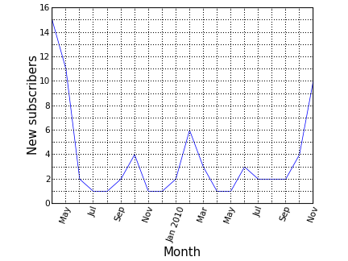

THIS IS A DRAFT
People like to map places they visit. There is a number of services that help to create a map of visited countries—just google for 'map visited countries'. In a global world the boundaries become less relevant, so it may be more fun to keep track of visits to another human abstraction, graticule sectors: parallels and meredians form a grid, one may choose sectors of one by one degree and record which were visited. (Idea by @frestelse5117.)
Images are clickable.
Source code. Read README for instructions.
Things to write about
- Properties of these two projections
- Links to other possible projections
- Libraries
- Extension to other services
- President Obama on 4sq
- Geotagged photos
- Locovidi
In the first iteration of Locopoly rules a player will randomly jump from one location to another within 1 km. Will it be possible to jump to every location in a city?
This question can be reduced to a hierarhical clustering problem, one of the standard problems of machine learning. In general, the clusters can be calculated based on some linkage criteria. For the formulated problem we need to use minimum or single-linkage clustering.
The clustering is done based on various distances, not necessary in Euclidian space. Here, we parse POIs from an OpenStreetMap file and convert them to (x,y) grid neglecting curvature of the Earth.
Any clustering libraries may be used. We use mlpy, scipy-cluster also seems to be interesting.
For jumping distance of 1 km several clusters are formed in Donetsk at the moment. The city was formed from many settlement and modern POIs distribution is a good indication of history. Still, all this clusters will be connected in the future when more places are mapped.
The largest cluster has more than 450 spots—a good initial playground.
The code is available at Github. It is good to reference:
- GIS
- parsing OSM file with cElementTree
- choosing only POIs with name key
- converting lat,lon to x,y
- mlpy (machine learning)
- Matplotlib
- scatter plot
- bar plot with colors
- getting colors from cmap
- Python
If to scale an information service to 1,000 cities what kind of cities will be covered? Or a reverse questions: how many cities have population of more than 1,000,000?
The answers can be found from geonames.org data just with a couple of lines of Python code:
more than 340 cities have population more than 1,000,000; the city ranked 1,000th in that data has population of around 400,000.
This is curious to see how cities population is distributed. The plot below is for cumulative distribution of cities population.
The linear dependence in a log-log plot is an indication of a power law dependence. At some population the distribution changes the slope. Below 1,000,000 inhabitants the slope is almost -1 which indicates 1/x dependence. Then it changes, and changes again at 7 million, and 10 million inhabitants. I would attribute changes at 1 and 10 million to psychology of regional and national governments that treat cities above and below these numbers differently.
Typically, this dependence is plotted in the form of size (population) vs. rank.
Rank-size distribution of cities population was noticed more than half a century ago and is a subject of multiple research studies.
The code to produce the plots is available at github. This is fascinating to play with it: to see if the distribution is universal from a country to country (it's not for large populations), to come up with a simple interpolation formula that approximates it and so on. But, to keep the note brief, these exercises are for a truly curious reader.

After Donetsk coffee'n'code announcement in a popular Russian collective blog Habrahabr, almost a dozen of new people subscribed to the mailing list. The plot above shows the number of new subscribers in last 20 months.
The code is available on Github. A blog post by Ian Lewis about Python date range iterator was helpful to write an iterator over months. The plot style (custom tick labels) is heavily based on Mark Larsen's answer to a Stackoverflow question.
One of the goals of TweetingPlaces is to help small local businesses to connect to their customers. One of the ways for them to increase exposure on Twitter may be to schedule tweets of non-immediate importance to times when the message may be seen by most of the followers. The plot above shows activity of followers on Twitter. It may help to get some insights on when to schedule tweets. Still, the best metric can be provided by direct measurements of the reactions on tweets posted at different times.
The plot is for a coffee shop "Изба-читальня" in Donetsk, Ukraine (during winter in UTC +2 timezone). Its tweets can be found at @izba4i . Most of its followers are Donetsk locals and tweet from 9 a.m. till 11 p.m. of local time with peak around 1 p.m. (lunch time).
The focus of TweetingPlaces is global, and scheduling tweets at particular times may be not a good strategy, but out of curiosity here is a plot for @tweetingplaces followers:
The minimum is much less pronounced and the followers start tweeting more than average after 8 a.m. Eastern Time.
The code for these plots is available at github. In addition to Matplotlib that has been used in all the previous examples, tweepy library is used to interact with Twitter API (note that you may have to limit number of requests per hour if many of them have to be made). Also, PyYAML does not come in standard library.
A couple years ago I did a small project that would allow a language learner to estimate a fraction of text she would understand by answering which words she knows and which does not. The idea was to split all the words in the text into groups, so that each group is met a given fraction of times in the text. To be specific, at the time the groups were chosen so that each group corresponds to 10% of all text. Further details of the testing algorithm may be found in a small essay in Russian .
It was surprising to see how well Pareto principle works with words. As it is stated in the Wikipedia article, the essence of Pareto's observation is that:
for many events, roughly 80% of the effects come from 20% of the causes.
As the graph above shows, this rule works remarkably well for words in a text too. That particular example shows a fraction of text contributed by a fraction of unique words for Lewis Carroll's " Alice's Adventures in Wonderland ".
The code for this post consists of two scripts. The first sorts words in the text by frequency, while the second does plotting and also finds a number x such that x% of words are responsible for (100 - x)% of the text. For Carroll's book this number is 17%.
Sometimes a big task requires many small steps to be completed. When planning, I split it into such steps that are clear how to complete in short time intervals. Timing each step may bring good dynamics into work, and sometimes signals that a step should be further divided. I was curious to see a visual representation of actual time intervals to complete a recent sequence of such steps.
A simple bar histogram seemed sufficient to satisfy this curiosity. Matplotlib Python library was helpful as always. Some insight could be gained even from such a simple visualization. For instance, in that particular task, after some time, steps were taking longer (maybe it was a natural point to take a break? or may be a point to re-plan the further steps?).
The code of this example is available at github.


{kind=link}